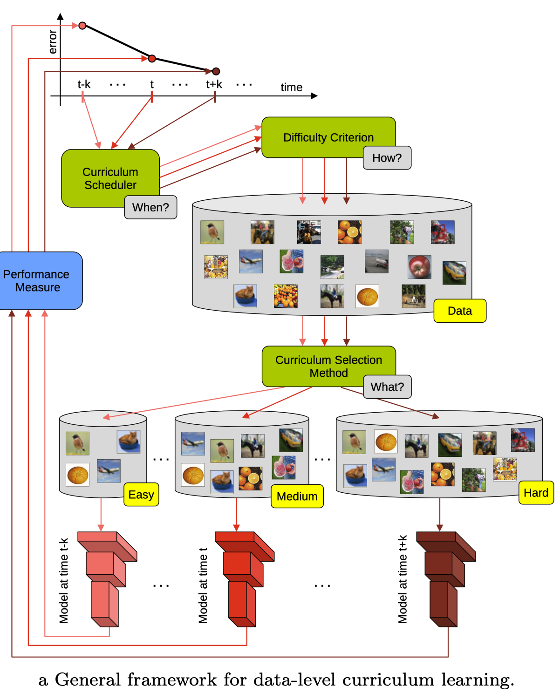

Code
import json
import matplotlib.pyplot as plt
import pandas as pd
import seaborn as sns
data = json.load(open("../data/convfinqa_dataset.json"))
data.keys()dict_keys(['train', 'dev'])In my current project, I’m exploring financial reasoning over conversational data. With all the buzz around DSPy, I decided it’s the perfect time to dive deep into this tool.
Financial reasoning over conversational data presents a unique challenge in NLP: models must not only understand natural language but also perform multi-step numerical computations while maintaining context across dialogue turns.
ConvFinQA is a dataset that combines conversational QA with financial documents and tables, requiring systems to execute chains of mathematical operations to arrive at correct answers.
What if we could improve model performance by teaching systems to learn from easier examples first, gradually building up to complex multi-turn reasoning? This is the core idea behind curriculum learning.
This post begins a series exploring curriculum learning with DSPy. We start with an exploratory analysis of ConvFinQA to understand what makes some examples harder than others, identify complexity patterns in the data, and establish the base for a curriculum-based approach.
import json
import matplotlib.pyplot as plt
import pandas as pd
import seaborn as sns
data = json.load(open("../data/convfinqa_dataset.json"))
data.keys()dict_keys(['train', 'dev'])The current dataset only contains the train and dev splits. For evaluation, we will likely use the dev split, and for training, we’ll split the train split into a train and val split.
train_df = pd.DataFrame(data["train"])
test_df = pd.DataFrame(data["dev"])train_df.info()<class 'pandas.core.frame.DataFrame'>
RangeIndex: 3037 entries, 0 to 3036
Data columns (total 4 columns):
# Column Non-Null Count Dtype
--- ------ -------------- -----
0 id 3037 non-null object
1 doc 3037 non-null object
2 dialogue 3037 non-null object
3 features 3037 non-null object
dtypes: object(4)
memory usage: 95.0+ KBtest_df.info()<class 'pandas.core.frame.DataFrame'>
RangeIndex: 421 entries, 0 to 420
Data columns (total 4 columns):
# Column Non-Null Count Dtype
--- ------ -------------- -----
0 id 421 non-null object
1 doc 421 non-null object
2 dialogue 421 non-null object
3 features 421 non-null object
dtypes: object(4)
memory usage: 13.3+ KBWe will explode the columns with nested features to make them easier to work with.
train_flat_df = pd.concat(
[
train_df.drop(["doc", "dialogue", "features"], axis=1),
train_df["doc"].apply(pd.Series).add_prefix("doc_"),
train_df["dialogue"].apply(pd.Series).add_prefix("dialogue_"),
train_df["features"].apply(pd.Series).add_prefix("features_"),
],
axis=1,
)
test_flat_df = pd.concat(
[
test_df.drop(["doc", "dialogue", "features"], axis=1),
test_df["doc"].apply(pd.Series).add_prefix("doc_"),
test_df["dialogue"].apply(pd.Series).add_prefix("dialogue_"),
test_df["features"].apply(pd.Series).add_prefix("features_"),
],
axis=1,
)train_flat_df.info()<class 'pandas.core.frame.DataFrame'>
RangeIndex: 3037 entries, 0 to 3036
Data columns (total 13 columns):
# Column Non-Null Count Dtype
--- ------ -------------- -----
0 id 3037 non-null object
1 doc_pre_text 3037 non-null object
2 doc_post_text 3037 non-null object
3 doc_table 3037 non-null object
4 dialogue_conv_questions 3037 non-null object
5 dialogue_conv_answers 3037 non-null object
6 dialogue_turn_program 3037 non-null object
7 dialogue_executed_answers 3037 non-null object
8 dialogue_qa_split 3037 non-null object
9 features_num_dialogue_turns 3037 non-null int64
10 features_has_type2_question 3037 non-null bool
11 features_has_duplicate_columns 3037 non-null bool
12 features_has_non_numeric_values 3037 non-null bool
dtypes: bool(3), int64(1), object(9)
memory usage: 246.3+ KBtest_flat_df.info()<class 'pandas.core.frame.DataFrame'>
RangeIndex: 421 entries, 0 to 420
Data columns (total 13 columns):
# Column Non-Null Count Dtype
--- ------ -------------- -----
0 id 421 non-null object
1 doc_pre_text 421 non-null object
2 doc_post_text 421 non-null object
3 doc_table 421 non-null object
4 dialogue_conv_questions 421 non-null object
5 dialogue_conv_answers 421 non-null object
6 dialogue_turn_program 421 non-null object
7 dialogue_executed_answers 421 non-null object
8 dialogue_qa_split 421 non-null object
9 features_num_dialogue_turns 421 non-null int64
10 features_has_type2_question 421 non-null bool
11 features_has_duplicate_columns 421 non-null bool
12 features_has_non_numeric_values 421 non-null bool
dtypes: bool(3), int64(1), object(9)
memory usage: 34.2+ KBFirst, let’s check to see if there’s any missing data in any field.
import missingno as msno
msno.matrix(train_flat_df)msno.matrix(test_flat_df)No missing values in the training dataset.
According to the database schema:
from pprint import pprint
pprint(train_flat_df["doc_pre_text"].head().iloc[0])('26 | 2009 annual report in fiscal 2008 , revenues in the credit union '
'systems and services business segment increased 14% ( 14 % ) from fiscal '
'2007 . all revenue components within the segment experienced growth during '
'fiscal 2008 . license revenue generated the largest dollar growth in revenue '
'as episys ae , our flagship core processing system aimed at larger credit '
'unions , experienced strong sales throughout the year . support and service '
'revenue , which is the largest component of total revenues for the credit '
'union segment , experienced 34 percent growth in eft support and 10 percent '
'growth in in-house support . gross profit in this business segment increased '
'$ 9344 in fiscal 2008 compared to fiscal 2007 , due primarily to the '
'increase in license revenue , which carries the highest margins . liquidity '
'and capital resources we have historically generated positive cash flow from '
'operations and have generally used funds generated from operations and '
'short-term borrowings on our revolving credit facility to meet capital '
'requirements . we expect this trend to continue in the future . the company '
'2019s cash and cash equivalents increased to $ 118251 at june 30 , 2009 from '
'$ 65565 at june 30 , 2008 . the following table summarizes net cash from '
'operating activities in the statement of cash flows : 2009 2008 2007 .')train_flat_df["doc_pre_text"].apply(len).describe()count 3037.000000
mean 1760.501811
std 1397.695620
min 1.000000
25% 568.000000
50% 1417.000000
75% 2765.000000
max 7153.000000
Name: doc_pre_text, dtype: float64test_flat_df["doc_pre_text"].apply(len).describe()count 421.000000
mean 1538.061758
std 1337.167597
min 17.000000
25% 410.000000
50% 1072.000000
75% 2347.000000
max 5639.000000
Name: doc_pre_text, dtype: float64Looks like the pre_text in the data has some si
fig, axes = plt.subplots(1, 2, figsize=(14, 5))
sns.histplot(
train_flat_df["doc_pre_text"].map(lambda x: len(str(x))),
bins=30,
color="blue",
alpha=0.7,
ax=axes[0],
)
axes[0].set_xlabel("Length of doc_pre_text")
axes[0].set_ylabel("Frequency")
axes[0].set_title("train_flat_df: doc_pre_text length")
sns.histplot(
test_flat_df["doc_pre_text"].map(lambda x: len(str(x))),
bins=30,
color="orange",
alpha=0.7,
ax=axes[1],
)
axes[1].set_xlabel("Length of doc_pre_text")
axes[1].set_ylabel("Frequency")
axes[1].set_title("test_flat_df: doc_pre_text length")
plt.tight_layout()
plt.show()
fig, axes = plt.subplots(1, 2, figsize=(14, 5))
sns.histplot(
train_flat_df["doc_post_text"].map(lambda x: len(str(x))),
bins=30,
color="green",
alpha=0.7,
ax=axes[0],
)
axes[0].set_xlabel("Length of doc_post_text")
axes[0].set_ylabel("Frequency")
axes[0].set_title("train_flat_df: doc_post_text length")
sns.histplot(
test_flat_df["doc_post_text"].map(lambda x: len(str(x))),
bins=30,
color="red",
alpha=0.7,
ax=axes[1],
)
axes[1].set_xlabel("Length of doc_post_text")
axes[1].set_ylabel("Frequency")
axes[1].set_title("test_flat_df: doc_post_text length")
plt.tight_layout()
plt.show()
Looks like the train and test data have a similar distribution for doc_pre_text and doc_post_text.
However, we do see some extreme outliers, with the large documents have > 5000 characters.
Most new generation LLMs do have a ctx window large enough to handle both pre text + table + post text in the same context window, and we may not need any pre-processing for fields. However, we will revisit this later.
doc_tabledef compute_dims(table):
"""
Compute basic shape statistics for a table dict.
Args:
table (dict): Mapping from row keys to dicts of column:value pairs.
Returns:
pd.Series: Series with n_rows, n_cols, total_cells.
- n_rows: Number of rows in the table (outer dict keys)
- n_cols: Number of unique columns across all rows
- total_cells: Total number of (row, col) value pairs
"""
n_rows = len(table)
cols = {col for row in table.values() for col in row}
n_cols = len(cols)
total_cells = sum(len(row) for row in table.values())
return pd.Series({"n_rows": n_rows, "n_cols": n_cols, "total_cells": total_cells})
for df in (train_flat_df, test_flat_df):
df[["n_rows", "n_cols", "total_cells"]] = df["doc_table"].apply(compute_dims)
all_dims = pd.concat(
[
train_flat_df[["n_rows", "n_cols", "total_cells"]].assign(split="train"),
test_flat_df[["n_rows", "n_cols", "total_cells"]].assign(split="test"),
],
ignore_index=True,
)
fig, axes = plt.subplots(3, 1, figsize=(10, 8))
for ax, col in zip(axes, ["n_rows", "n_cols", "total_cells"]):
sns.histplot(data=all_dims, x=col, hue="split", multiple="stack", bins=30, ax=ax)
ax.set_title(col)
plt.tight_layout()
plt.show()Some key points:
test dataset tops out at ~8-9 columns.threshold = 10
print(f"Tables with more than {threshold} columns per split:")
for split, df in [("train", train_flat_df), ("test", test_flat_df)]:
subset = df[df["n_cols"] > threshold]
print(f" {split}: {len(subset)}")
if not subset.empty:
print(subset[["id", "n_rows", "n_cols"]].head(), "\n")Tables with more than 10 columns per split:
train: 100
id n_rows n_cols
16 Double_PNC/2014/page_99.pdf 2 14
37 Single_GS/2013/page_47.pdf-2 3 12
90 Single_CDW/2015/page_34.pdf-2 5 12
133 Single_CE/2014/page_90.pdf-1 1 11
137 Single_C/2009/page_195.pdf-2 3 14
test: 8
id n_rows n_cols
50 Single_JPM/2007/page_33.pdf-2 3 11
51 Single_GS/2017/page_143.pdf-2 2 13
109 Single_JPM/2007/page_33.pdf-1 3 11
117 Single_GS/2017/page_143.pdf-1 2 13
298 Single_MA/2008/page_126.pdf-1 1 14
def count_nested_tables(table):
"""
Recursively count nested tables in a table dict.
A nested table is any dict or list of dicts within cell values (deeper than the row level).
"""
def _count(t, depth):
cnt = 0
if isinstance(t, dict):
for v in t.values():
if isinstance(v, dict):
if depth > 0:
cnt += 1
cnt += _count(v, depth + 1)
elif isinstance(v, list):
for item in v:
if isinstance(item, dict):
if depth > 0:
cnt += 1
cnt += _count(item, depth + 1)
return cnt
return _count(table, 0)
for df in (train_flat_df, test_flat_df):
df["nested_tables"] = df["doc_table"].apply(count_nested_tables)
print("Nested tables per split:")
for split, df in [("train", train_flat_df), ("test", test_flat_df)]:
nt = df["nested_tables"]
print(
f" {split}: docs w/ nested tables = {(nt > 0).sum()} / {len(nt)}, max nested = {nt.max()}"
)
nested_df = pd.concat(
[
train_flat_df[["nested_tables"]].assign(split="train"),
test_flat_df[["nested_tables"]].assign(split="test"),
],
ignore_index=True,
)
nested_df.info()Nested tables per split:
train: docs w/ nested tables = 0 / 3037, max nested = 0
test: docs w/ nested tables = 0 / 421, max nested = 0
<class 'pandas.core.frame.DataFrame'>
RangeIndex: 3458 entries, 0 to 3457
Data columns (total 2 columns):
# Column Non-Null Count Dtype
--- ------ -------------- -----
0 nested_tables 3458 non-null int64
1 split 3458 non-null object
dtypes: int64(1), object(1)
memory usage: 54.2+ KBnested_df[nested_df["nested_tables"] >= 2]| nested_tables | split |
|---|
Looks like the table are not deeply nested! This is good since we don’t have to worry too much about table formatting, when sending the table as context to the LLM.
from collections import Counter
def analyze_split(df, split_name):
n_docs = len(df)
dup_count = df["features_has_duplicate_columns"].sum()
years_per_doc = df["doc_table"].apply(len)
year_stats = years_per_doc.describe().to_dict()
freq = Counter()
doc_freq = Counter()
all_headers = set()
for tbl in df["doc_table"]:
hdrs_in_doc = set()
for year_dict in tbl.values():
freq.update(year_dict.keys())
hdrs_in_doc.update(year_dict.keys())
doc_freq.update(hdrs_in_doc)
all_headers.update(hdrs_in_doc)
print(f"\n--- {split_name.upper()} SPLIT ---")
print(f"Total docs: {n_docs}")
print(f"Docs w/ duplicate cols: {dup_count} ({dup_count / n_docs:.1%})")
print(f"Years/doc stats: {year_stats}")
print(f"Unique headers across all docs: {len(all_headers)}")
print("Top 10 headers by total occurrences:", freq.most_common(10))
print("Top 10 headers by docs appeared in:", doc_freq.most_common(10))
for name, df in [("train", train_flat_df), ("test", test_flat_df)]:
analyze_split(df, name)
--- TRAIN SPLIT ---
Total docs: 3037
Docs w/ duplicate cols: 60 (2.0%)
Years/doc stats: {'count': 3037.0, 'mean': 2.839973658215344, 'std': 1.5134690841267935, 'min': 1.0, '25%': 2.0, '50%': 3.0, '75%': 3.0, 'max': 10.0}
Unique headers across all docs: 3948
Top 10 headers by total occurrences: [('total', 1147), ('s&p 500 index', 456), ('s&p 500', 419), ('other', 371), ('operating profit', 253), ('net sales', 229), ('2009', 210), ('2012', 206), ('2010', 206), ('2011', 201)]
Top 10 headers by docs appeared in: [('total', 383), ('other', 205), ('thereafter', 109), ('2012', 107), ('2011', 103), ('2013', 102), ('2010', 99), ('2009', 98), ('2014', 91), ('2018', 87)]
--- TEST SPLIT ---
Total docs: 421
Docs w/ duplicate cols: 17 (4.0%)
Years/doc stats: {'count': 421.0, 'mean': 3.0332541567695963, 'std': 1.6500609236986385, 'min': 1.0, '25%': 2.0, '50%': 3.0, '75%': 4.0, 'max': 8.0}
Unique headers across all docs: 833
Top 10 headers by total occurrences: [('total', 183), ('s&p 500 index', 120), ('cadence design systems inc .', 72), ('nasdaq composite', 72), ('other', 60), ('s&p 500', 42), ('2011', 40), ('operating income', 39), ('2012', 38), ('s&p retail index', 36)]
Top 10 headers by docs appeared in: [('total', 54), ('other', 36), ('s&p 500 index', 20), ('2014', 18), ('2015', 18), ('2012', 17), ('2010', 16), ('2011', 16), ('2007', 16), ('2017', 14)]from collections import Counter
import re
def normalize_row_key(k: str) -> str:
"""Lower-case, drop punctuation, collapse spaces."""
if not k:
return ""
k = k.lower()
k = re.sub(r"[_\-]", " ", k)
k = re.sub(r"[()%:$,]", " ", k)
return re.sub(r"\s+", " ", k).strip()
def analyze_row_headers(df, split_name: str, top_n: int = 10):
raw_freq, norm_freq, summary_freq = Counter(), Counter(), Counter()
summary_kw = (
"total",
"net",
"%",
"percent",
"change",
"difference",
"subtotal",
"summary",
)
for tbl in df["doc_table"]:
if not isinstance(tbl, dict):
continue
for year_dict in tbl.values():
if not isinstance(year_dict, dict):
continue
for raw in year_dict.keys():
if raw is None:
continue
raw = str(raw).strip()
norm = normalize_row_key(raw)
raw_freq[raw] += 1
norm_freq[norm] += 1
if any(k in raw.lower() for k in summary_kw):
summary_freq[raw] += 1
total_rows = sum(raw_freq.values())
print(f"\n===== {split_name.upper()} SPLIT : ROW HEADER ANALYSIS =====")
print(f"Row instances : {total_rows}")
print(f"Unique raw headers : {len(raw_freq):,}")
print(f"Unique normalized headers : {len(norm_freq):,}")
print("\nRaw header ➜ Normalized header (top 10 by freq)")
for hdr, _ in raw_freq.most_common(10):
print(f"{hdr[:55]:55} ➜ {normalize_row_key(hdr)}")
print(f"\nTop-{top_n} most frequent financial metrics (normalized)")
for hdr, cnt in norm_freq.most_common(top_n):
print(f"{hdr[:55]:55} {cnt:>6}")
tot_summary = sum(summary_freq.values())
print(f"\nSubtotal/Summary rows detected (keywords {summary_kw})")
print(f"Instances: {tot_summary} ({tot_summary / total_rows:.1%} of all rows)")
for hdr, cnt in summary_freq.most_common(10):
print(f"{hdr[:55]:55} {cnt:>6}")
for name, df in (("train", train_flat_df), ("test", test_flat_df)):
analyze_row_headers(df, name)
===== TRAIN SPLIT : ROW HEADER ANALYSIS =====
Row instances : 42813
Unique raw headers : 3,948
Unique normalized headers : 3,921
Raw header ➜ Normalized header (top 10 by freq)
total ➜ total
s&p 500 index ➜ s&p 500 index
s&p 500 ➜ s&p 500
other ➜ other
operating profit ➜ operating profit
net sales ➜ net sales
2009 ➜ 2009
2012 ➜ 2012
2010 ➜ 2010
2011 ➜ 2011
Top-10 most frequent financial metrics (normalized)
total 1147
s&p 500 index 456
s&p 500 419
other 371
operating profit 253
net sales 229
2009 210
2010 208
2012 206
2011 201
Subtotal/Summary rows detected (keywords ('total', 'net', '%', 'percent', 'change', 'difference', 'subtotal', 'summary'))
Instances: 7535 (17.6% of all rows)
total 1147
net sales 229
net income 118
net cash provided by operating activities 117
total net revenues 78
total operating expenses 75
total contractual obligations 67
total debt 61
net earnings ( loss ) 58
total minimum lease payments 57
===== TEST SPLIT : ROW HEADER ANALYSIS =====
Row instances : 6159
Unique raw headers : 833
Unique normalized headers : 832
Raw header ➜ Normalized header (top 10 by freq)
total ➜ total
s&p 500 index ➜ s&p 500 index
cadence design systems inc . ➜ cadence design systems inc .
nasdaq composite ➜ nasdaq composite
other ➜ other
s&p 500 ➜ s&p 500
2011 ➜ 2011
operating income ➜ operating income
2012 ➜ 2012
s&p retail index ➜ s&p retail index
Top-10 most frequent financial metrics (normalized)
total 183
s&p 500 index 120
cadence design systems inc . 72
nasdaq composite 72
other 60
s&p 500 42
2011 40
operating income 39
2012 38
s&p retail index 36
Subtotal/Summary rows detected (keywords ('total', 'net', '%', 'percent', 'change', 'difference', 'subtotal', 'summary'))
Instances: 1218 (19.8% of all rows)
total 183
net cash provided by operating activities 28
1.375% ( 1.375 % ) notes due 2015 24
6.25% ( 6.25 % ) notes due 2017 24
5.00% ( 5.00 % ) notes due 2019 24
4.25% ( 4.25 % ) notes due 2021 24
3.375% ( 3.375 % ) notes due 2022 24
total long-term borrowings 24
total contractual obligations 24
net income 21We see some similar patterns in the row headers across the splits, but nothing of significance.
from collections import Counter
import re
def _yield_cells(x):
if isinstance(x, dict):
for v in x.values():
yield from _yield_cells(v)
elif isinstance(x, (list, tuple)):
for v in x:
yield from _yield_cells(v)
else:
yield x
def _parse_num(tok):
s = str(tok).strip()
if not s or s.lower() in ("na", "n/a", "nan", "-"):
return None
neg = (s.startswith("(") and s.endswith(")")) or s.endswith("-")
s = s.strip("()").rstrip("-")
s = re.sub(r"[,\$%]", "", s)
mult = 1
if s.lower().endswith("m"):
mult, s = 1e6, s[:-1]
elif s.lower().endswith("k"):
mult, s = 1e3, s[:-1]
try:
val = float(s) * mult
return -val if neg else val
except:
return None
def analyze_cell_values(df, split_name, top_n=10):
total = num = missing = unp = 0
unpatt = Counter()
for tbl in df["doc_table"]:
if not isinstance(tbl, dict):
continue
for cell in _yield_cells(tbl):
total += 1
txt = str(cell).strip()
if cell is None or txt == "":
missing += 1
elif _parse_num(cell) is None:
unp += 1
key = txt.lower()[:25]
unpatt[key] += 1
else:
num += 1
print(f"\n=== {split_name.upper()} CELL QUALITY ===")
print(f"total: {total}, numeric: {num}, missing: {missing}, unparseable: {unp}")
print(f"Top {top_n} unparseable patterns:")
for pat, cnt in unpatt.most_common(top_n):
print(f" {pat:25} {cnt}")
for name, d in (("train", train_flat_df), ("test", test_flat_df)):
analyze_cell_values(d, name)
=== TRAIN CELL QUALITY ===
total: 42813, numeric: 41499, missing: 184, unparseable: 1130
Top 10 unparseable patterns:
- 265
n/a 147
( in thousands ) 102
nm 62
owned 43
$ - 42
pay 22
fta 20
cash 16
leased 14
=== TEST CELL QUALITY ===
total: 6159, numeric: 6045, missing: 12, unparseable: 102
Top 10 unparseable patterns:
- 13
none 9
high 6
low 6
( b ) 6
leased 6
united states 4
united kingdom 4
( d ) 3
nm 3We see that:
Top unparseable patterns include -, n/a, ( in thousands ), nm, none, high, low, etc., indicating placeholders, qualifiers, and unit headers that need cleaning or custom parsing.
When selecting records for evaluation, we should:
This keeps our evaluation set focused on clean, numeric data and avoids noise from poorly parsed entries. More on this later!
train_flat_df.columnsIndex(['id', 'doc_pre_text', 'doc_post_text', 'doc_table',
'dialogue_conv_questions', 'dialogue_conv_answers',
'dialogue_turn_program', 'dialogue_executed_answers',
'dialogue_qa_split', 'features_num_dialogue_turns',
'features_has_type2_question', 'features_has_duplicate_columns',
'features_has_non_numeric_values', 'n_rows', 'n_cols', 'total_cells',
'nested_tables'],
dtype='object')dialogue_conv_questionstrain_q_lens = train_flat_df["dialogue_conv_questions"].explode().dropna().map(len)
test_q_lens = test_flat_df["dialogue_conv_questions"].explode().dropna().map(len)
df_q = pd.concat(
[
pd.DataFrame({"length": train_q_lens, "split": "train"}),
pd.DataFrame({"length": test_q_lens, "split": "test"}),
]
)
sns.set_theme(style="whitegrid")
plt.figure(figsize=(8, 5))
sns.histplot(
data=df_q, x="length", hue="split", stat="density", element="step", fill=False
)
plt.title("Distribution of Dialogue Question Lengths by Split")
plt.xlabel("Question Length (characters)")
plt.ylabel("Density")
plt.tight_layout()Majority of the questions in both the train and test set are short. This is ideal.
dialogue_conv_answerstrain_q_lens = train_flat_df["dialogue_conv_answers"].explode().dropna().map(len)
test_q_lens = test_flat_df["dialogue_conv_answers"].explode().dropna().map(len)
df_q = pd.concat(
[
pd.DataFrame({"length": train_q_lens, "split": "train"}),
pd.DataFrame({"length": test_q_lens, "split": "test"}),
]
)
sns.set_theme(style="whitegrid")
plt.figure(figsize=(8, 5))
sns.histplot(
data=df_q, x="length", hue="split", stat="density", element="step", fill=False
)
plt.title("Distribution of Dialogue Answer Lengths by Split")
plt.xlabel("Answer Length (characters)")
plt.ylabel("Density")
plt.tight_layout()As mentioned in the dataset, most of the answers are either numeric or boolean in nature. We see a majority of the answers having length <= 8, meaning that these are either large numbers, or numbers with large precision.
dialogue_turn_programThis field represents the program DSL generated for the current turn.
train_flat_df["dialogue_turn_program"].head()0 [206588, 181001, subtract(206588, 181001), sub...
1 [9362.2, 9244.9, subtract(9362.2, 9244.9), sub...
2 [5363, 7983, subtract(5363, 7983), subtract(53...
3 [subtract(75.95, const_100), subtract(75.95, c...
4 [subtract(91.06, const_100), subtract(91.06, c...
Name: dialogue_turn_program, dtype: objectdef _get_op_counts(df: pd.DataFrame) -> pd.Series:
"""Return a Series with the number of '(' in every element of dialogue_turn_program."""
return (
df["dialogue_turn_program"]
.explode() # one element per row
.dropna()
.apply(lambda rec: str(rec).count("("))
)
counts_train = _get_op_counts(train_flat_df)
counts_test = _get_op_counts(test_flat_df)
df_counts = pd.concat(
[
pd.DataFrame({"ops": counts_train, "split": "train"}),
pd.DataFrame({"ops": counts_test, "split": "test"}),
]
)
plt.figure(figsize=(8, 4))
sns.histplot(
data=df_counts,
x="ops",
hue="split",
bins=range(0, df_counts["ops"].max() + 2),
element="step",
fill=False,
)
plt.xlabel("Number of operations per element")
plt.ylabel("Frequency")
plt.title("Histogram of operation counts in turn_programs (train vs. test)")
plt.tight_layout()
plt.show()Similar distributions for number of operations in both the train and test set. Majority of the operations are < 4 .
We could argue that the number of operations is a good proxy for the complexity of the program. As such, we should probably aim to do well first on the examples where the number of operations is small.
train_flat_df.columnsIndex(['id', 'doc_pre_text', 'doc_post_text', 'doc_table',
'dialogue_conv_questions', 'dialogue_conv_answers',
'dialogue_turn_program', 'dialogue_executed_answers',
'dialogue_qa_split', 'features_num_dialogue_turns',
'features_has_type2_question', 'features_has_duplicate_columns',
'features_has_non_numeric_values', 'n_rows', 'n_cols', 'total_cells',
'nested_tables'],
dtype='object')features_num_dialogue_turnsfig, axes = plt.subplots(1, 2, figsize=(14, 5), sharey=True)
order = sorted(
set(train_flat_df["features_num_dialogue_turns"]).union(
test_flat_df["features_num_dialogue_turns"]
)
)
sns.countplot(
y="features_num_dialogue_turns",
data=train_flat_df,
order=order,
ax=axes[0],
color="blue",
alpha=0.7,
)
axes[0].set(
title="Train: Num Dialogue Turns", xlabel="Count", ylabel="Num Dialogue Turns"
)
sns.countplot(
y="features_num_dialogue_turns",
data=test_flat_df,
order=order,
ax=axes[1],
color="orange",
alpha=0.7,
)
axes[1].set(title="Test: Num Dialogue Turns", xlabel="Count", ylabel="")
plt.tight_layout()
plt.show()Similar distributions across the train and test sets. As mentioned in the paper, we should expect conversations with more dialogue turns, to be more difficult to answer for models.
This is yet another feature we could use when deciding how to split our data into train, validation, and test sets.
train_flat_df.columnsIndex(['id', 'doc_pre_text', 'doc_post_text', 'doc_table',
'dialogue_conv_questions', 'dialogue_conv_answers',
'dialogue_turn_program', 'dialogue_executed_answers',
'dialogue_qa_split', 'features_num_dialogue_turns',
'features_has_type2_question', 'features_has_duplicate_columns',
'features_has_non_numeric_values', 'n_rows', 'n_cols', 'total_cells',
'nested_tables'],
dtype='object')features_has_type2_questionimport seaborn as sns
for name, df in [("Train", train_flat_df), ("Test", test_flat_df)]:
vc = df["features_has_type2_question"].value_counts()
print(f"{name} set – Has Type 2 Question counts:\n{vc}\n")
fig, axes = plt.subplots(1, 2, figsize=(10, 4), sharey=True)
sns.countplot(
y="features_has_type2_question",
data=train_flat_df,
ax=axes[0],
palette="Blues",
alpha=0.7,
)
axes[0].set(
title="Train: Has Type 2 Question", xlabel="Count", ylabel="Has Type 2 Question"
)
sns.countplot(
y="features_has_type2_question",
data=test_flat_df,
ax=axes[1],
palette="Oranges",
alpha=0.7,
)
axes[1].set(title="Test: Has Type 2 Question", xlabel="Count", ylabel="")
plt.tight_layout()
plt.show()Train set – Has Type 2 Question counts:
features_has_type2_question
False 2148
True 889
Name: count, dtype: int64
Test set – Has Type 2 Question counts:
features_has_type2_question
False 300
True 121
Name: count, dtype: int64
/var/folders/zf/l4rjbhhj6xq9bfzs9cr7m5vr0000gn/T/ipykernel_98862/668524099.py:9: FutureWarning:
Passing `palette` without assigning `hue` is deprecated and will be removed in v0.14.0. Assign the `y` variable to `hue` and set `legend=False` for the same effect.
sns.countplot(
/var/folders/zf/l4rjbhhj6xq9bfzs9cr7m5vr0000gn/T/ipykernel_98862/668524099.py:20: FutureWarning:
Passing `palette` without assigning `hue` is deprecated and will be removed in v0.14.0. Assign the `y` variable to `hue` and set `legend=False` for the same effect.
sns.countplot(Similar distrbutions for Type2 questions across the train and test sets, as expected.
Given the above dataset analysis, a few things are clear:
The current generation of language models have 3 main phases of training:
As seen with our dataset, even current language models are trained in stages, with problems that are seemingly difficult for models to understand explicitly trained in either the mid or post-training phase.
This methodology has roots in an reinforcement learning technique called Curriculum Learning.
Core Idea: Curriculum learning for LLMs involves carefully selecting and ordering training data based on difficulty, starting with simpler examples and gradually introducing more complex ones.
Why it’s beneficial:

Source: Curriculum Learning: A Survey, Soviany et al.
For our dataset, given our analysis, we have the following levers to consider:
Given that we had limited time, we will pick the following
To prevent overlap and duplicates, we will construct the stages in reverse order i.e - Hard first to ensure we isolate the difficult problems - Easy next to identify baseline performance - Remaining problems go into medium to help develop better reasoning and arithmetic abilities.
def get_max_ops_per_conversation(df):
def max_ops(turn_programs):
# turn_programs is a list of lists (or strings), one per turn
# Each turn_program is a string or list of strings, e.g. ['subtract(206588, 181001)', ...]
# We'll count the number of operations per turn, then take the max
import re
if not isinstance(turn_programs, list):
return 0
op_pattern = re.compile(r"([a-zA-Z_][a-zA-Z0-9_]*\()")
max_ops = 0
for turn in turn_programs:
if isinstance(turn, str):
# count ops in the string
ops = len(op_pattern.findall(turn))
elif isinstance(turn, list):
# count ops in all strings in the list
ops = sum(len(op_pattern.findall(str(x))) for x in turn)
else:
ops = 0
if ops > max_ops:
max_ops = ops
return max_ops
return df["dialogue_turn_program"].apply(max_ops)
train_flat_df["max_ops_per_conversation"] = get_max_ops_per_conversation(train_flat_df)
test_flat_df["max_ops_per_conversation"] = get_max_ops_per_conversation(test_flat_df)train_flat_df["doc_pre_text_len"] = train_flat_df["doc_pre_text"].apply(
lambda x: len(x.split())
)
train_flat_df["doc_post_text_len"] = train_flat_df["doc_post_text"].apply(
lambda x: len(x.split())
)
test_flat_df["doc_pre_text_len"] = test_flat_df["doc_pre_text"].apply(
lambda x: len(x.split())
)
test_flat_df["doc_post_text_len"] = test_flat_df["doc_post_text"].apply(
lambda x: len(x.split())
)train_flat_df[
[
"max_ops_per_conversation",
"features_has_type2_question",
"features_has_duplicate_columns",
"features_num_dialogue_turns",
"features_has_non_numeric_values",
"doc_pre_text_len",
"doc_post_text_len",
"n_rows",
"n_cols",
"total_cells",
]
].astype(int).describe()| max_ops_per_conversation | features_has_type2_question | features_has_duplicate_columns | features_num_dialogue_turns | features_has_non_numeric_values | doc_pre_text_len | doc_post_text_len | n_rows | n_cols | total_cells | |
|---|---|---|---|---|---|---|---|---|---|---|
| count | 3037.000000 | 3037.000000 | 3037.000000 | 3037.000000 | 3037.000000 | 3037.000000 | 3037.000000 | 3037.000000 | 3037.000000 | 3037.000000 |
| mean | 2.035232 | 0.292723 | 0.019756 | 3.656240 | 0.122160 | 300.901218 | 320.378005 | 2.839974 | 5.232137 | 14.097135 |
| std | 0.655179 | 0.455087 | 0.139185 | 1.319899 | 0.327524 | 239.324988 | 256.003210 | 1.513469 | 2.506996 | 10.260609 |
| min | 1.000000 | 0.000000 | 0.000000 | 1.000000 | 0.000000 | 1.000000 | 1.000000 | 1.000000 | 1.000000 | 1.000000 |
| 25% | 2.000000 | 0.000000 | 0.000000 | 3.000000 | 0.000000 | 100.000000 | 102.000000 | 2.000000 | 3.000000 | 7.000000 |
| 50% | 2.000000 | 0.000000 | 0.000000 | 4.000000 | 0.000000 | 244.000000 | 285.000000 | 3.000000 | 5.000000 | 12.000000 |
| 75% | 2.000000 | 1.000000 | 0.000000 | 5.000000 | 0.000000 | 470.000000 | 498.000000 | 3.000000 | 7.000000 | 18.000000 |
| max | 5.000000 | 1.000000 | 1.000000 | 9.000000 | 1.000000 | 1132.000000 | 1489.000000 | 10.000000 | 19.000000 | 114.000000 |
test_flat_df[
[
"max_ops_per_conversation",
"features_has_type2_question",
"features_has_duplicate_columns",
"features_num_dialogue_turns",
"features_has_non_numeric_values",
"doc_pre_text_len",
"doc_post_text_len",
"n_rows",
"n_cols",
"total_cells",
]
].astype(int).describe()| max_ops_per_conversation | features_has_type2_question | features_has_duplicate_columns | features_num_dialogue_turns | features_has_non_numeric_values | doc_pre_text_len | doc_post_text_len | n_rows | n_cols | total_cells | |
|---|---|---|---|---|---|---|---|---|---|---|
| count | 421.000000 | 421.000000 | 421.000000 | 421.000000 | 421.000000 | 421.000000 | 421.000000 | 421.000000 | 421.000000 | 421.000000 |
| mean | 2.061758 | 0.287411 | 0.040380 | 3.539192 | 0.076010 | 263.475059 | 322.712589 | 3.033254 | 5.173397 | 14.629454 |
| std | 0.658993 | 0.453093 | 0.197083 | 1.252239 | 0.265329 | 226.086872 | 252.372826 | 1.650061 | 2.206237 | 8.670173 |
| min | 1.000000 | 0.000000 | 0.000000 | 2.000000 | 0.000000 | 3.000000 | 1.000000 | 1.000000 | 1.000000 | 2.000000 |
| 25% | 2.000000 | 0.000000 | 0.000000 | 2.000000 | 0.000000 | 74.000000 | 119.000000 | 2.000000 | 3.000000 | 8.000000 |
| 50% | 2.000000 | 0.000000 | 0.000000 | 4.000000 | 0.000000 | 187.000000 | 292.000000 | 3.000000 | 5.000000 | 12.000000 |
| 75% | 2.000000 | 1.000000 | 0.000000 | 5.000000 | 0.000000 | 406.000000 | 520.000000 | 4.000000 | 6.000000 | 18.000000 |
| max | 5.000000 | 1.000000 | 1.000000 | 8.000000 | 1.000000 | 933.000000 | 1099.000000 | 8.000000 | 14.000000 | 48.000000 |
While our complexity classification captures overall difficulty, curriculum learning requires more nuanced sampling strategies. Simply taking the hardest examples might create an imbalanced curriculum that overrepresents certain types of complexity while ignoring others.
Consider two scenarios: 1. Naive sampling: We randomly sample from our “Hard” bucket and end up with 80% long-context examples but only 5% multi-operation examples 2. Quota sampling: We ensure balanced representation across complexity dimensions
The second approach creates a more robust curriculum. Our hard examples should include: - Deep reasoning (4+ mathematical operations) - Long conversations (7+ dialogue turns) - Dense context (lengthy pre/post text) - Complex tables (many cells, nested structures) - Noisy data (duplicate columns, non-numeric values)
This ensures our model learns to handle diverse types of complexity rather than overfitting to a single difficulty dimension. The following code implements quota-based sampling to achieve this balanced representation:
from pprint import pprint
from pathlib import Path
import numpy as np
TARGETS = {
"Easy": {"train": 300, "valid": 70, "test": 80},
"Medium": {"train": 300, "valid": 70, "test": 80},
"Hard": {"train": 220, "valid": 60, "test": 80},
}
OUTDIR = Path("splits")
RANDOM_STATE = 42
P50_pre = int(train_flat_df["doc_pre_text_len"].quantile(0.50))
P65_pre = int(train_flat_df["doc_pre_text_len"].quantile(0.65))
P80_pre = int(train_flat_df["doc_pre_text_len"].quantile(0.80))
P90_pre = int(train_flat_df["doc_pre_text_len"].quantile(0.90))
P50_post = int(train_flat_df["doc_post_text_len"].quantile(0.50))
P65_post = int(train_flat_df["doc_post_text_len"].quantile(0.65))
P80_post = int(train_flat_df["doc_post_text_len"].quantile(0.80))
P90_post = int(train_flat_df["doc_post_text_len"].quantile(0.90))
P50_cells = int(train_flat_df["total_cells"].quantile(0.50))
P65_cells = int(train_flat_df["total_cells"].quantile(0.65))
P80_cells = int(train_flat_df["total_cells"].quantile(0.80))
P90_cells = int(train_flat_df["total_cells"].quantile(0.90))
print(
f"[Percentiles/train] pre P50={P50_pre}, P65={P65_pre}, P80={P80_pre}, P90={P90_pre} "
f"| post P50={P50_post}, P65={P65_post}, P80={P80_post}, P90={P90_post} "
f"| cells P50={P50_cells}, P65={P65_cells}, P80={P80_cells}, P90={P90_cells}"
)
def assign_stages(df: pd.DataFrame) -> pd.Series:
mops = df["max_ops_per_conversation"]
turns = df["features_num_dialogue_turns"]
t2 = df["features_has_type2_question"]
preL = df["doc_pre_text_len"]
postL = df["doc_post_text_len"]
cells = df["total_cells"]
dup = df["features_has_duplicate_columns"]
nonnum = df["features_has_non_numeric_values"]
# HARD (tail)
hard = (
(mops >= 4)
| (turns >= 7)
| (preL > P90_pre)
| (postL > P90_post)
| (cells > P90_cells)
| (dup)
| (
nonnum
& (
(mops >= 3)
| (preL > P80_pre)
| (postL > P80_post)
| (cells > P80_cells)
)
)
)
# EASY (P65)
easy = (~hard) & (
(mops <= 2)
& (turns.between(2, 4, inclusive="both"))
& (~t2)
& (preL <= P65_pre)
& (postL <= P65_post)
& (cells <= P65_cells)
)
# MEDIUM (middle band)
medium = (
(~hard)
& (~easy)
& (
((mops.isin([2, 3])) | (t2))
& (turns.between(3, 6, inclusive="both"))
& (preL <= P90_pre)
& (postL <= P90_post)
& (cells <= P90_cells)
)
)
stage = pd.Series(index=df.index, dtype="string")
stage.loc[hard] = "Hard"
stage.loc[easy] = "Easy"
stage.loc[medium] = "Medium"
stage = stage.fillna("Medium")
return stage
cur_train_df = train_flat_df.copy()
cur_test_df = test_flat_df.copy()
cur_train_df["stage"] = assign_stages(cur_train_df)
cur_test_df["stage"] = assign_stages(cur_test_df)
print("[Stage counts] TRAIN:", cur_train_df["stage"].value_counts().to_dict())
print("[Stage counts] TEST: ", cur_test_df["stage"].value_counts().to_dict())
def sample_df(df: pd.DataFrame, n: int, seed: int) -> pd.DataFrame:
if n <= 0 or df.empty:
return df.iloc[0:0]
if len(df) <= n:
return df.sample(frac=1.0, random_state=seed) # shuffle full pool if small
return df.sample(n=n, random_state=seed)
# =========================
# HARD QUOTA REBALANCING
# =========================
HARD_PROPS = {
"deep_ops": 0.23, # max_ops >= 4
"long_turns": 0.23, # turns >= 7
"long_ctx": 0.27, # pre > P90_pre OR post > P90_post
"big_table": 0.20, # total_cells > P90_cells
"noisy": 0.07, # duplicate OR non-numeric (with complexity already in stage)
}
def hard_bucket_masks(df: pd.DataFrame):
return {
"deep_ops": (df["max_ops_per_conversation"] >= 4),
"long_turns": (df["features_num_dialogue_turns"] >= 7),
"long_ctx": (df["doc_pre_text_len"] > P90_pre)
| (df["doc_post_text_len"] > P90_post),
"big_table": (df["total_cells"] > P90_cells),
"noisy": (df["features_has_duplicate_columns"])
| (df["features_has_non_numeric_values"]),
}
def quota_sample_df(
pool: pd.DataFrame, total_n: int, masks: dict, props: dict, seed: int
) -> pd.DataFrame:
"""
Quota-based sampling without replacement across overlapping buckets.
- masks: dict[name] -> boolean Series over pool
- props: dict[name] -> proportion (0..1)
Strategy:
1) compute desired counts per bucket by props * total_n
2) iterate buckets in fixed priority, sample from items not yet taken
3) cap each bucket by its availability
4) top up remaining slots uniformly at random from leftover pool
"""
rng = np.random.default_rng(seed)
pool = pool.copy()
taken_idx = set()
out_parts = []
# emphasize "deep_ops" and "long_turns"/"long_ctx" first
order = ["deep_ops", "long_turns", "long_ctx", "big_table", "noisy"]
desired = {k: int(round(total_n * props.get(k, 0.0))) for k in order}
# adjust rounding to not exceed total_n
diff = total_n - sum(desired.values())
if diff != 0:
# distribute remainder by descending props
for k in sorted(order, key=lambda x: props.get(x, 0), reverse=(diff > 0)):
if diff == 0:
break
desired[k] += 1 if diff > 0 else -1
diff += -1 if diff > 0 else 1
for k in order:
if desired[k] <= 0:
continue
bucket_idx = pool.index[masks[k]]
# remove already taken
bucket_idx = [i for i in bucket_idx if i not in taken_idx]
if not bucket_idx:
continue
take_k = min(desired[k], len(bucket_idx))
choose = list(rng.choice(bucket_idx, size=take_k, replace=False))
out_parts.append(pool.loc[choose])
taken_idx.update(choose)
# top-up if needed
taken_cnt = sum(len(p) for p in out_parts)
need = max(0, total_n - taken_cnt)
if need > 0:
leftover_idx = [i for i in pool.index if i not in taken_idx]
if leftover_idx:
k = min(need, len(leftover_idx))
choose = list(rng.choice(leftover_idx, size=k, replace=False))
out_parts.append(pool.loc[choose])
if out_parts:
out = pd.concat(out_parts, axis=0)
else:
out = pool.iloc[0:0]
return out.sample(frac=1.0, random_state=seed)
# --- Build splits with quota rebalance only for Hard ---
splits = {}
OUTDIR.mkdir(parents=True, exist_ok=True)
for i, stage in enumerate(["Easy", "Medium", "Hard"]):
tconf = TARGETS[stage]
train_pool = cur_train_df[cur_train_df["stage"] == stage]
test_pool = cur_test_df[cur_test_df["stage"] == stage]
if stage != "Hard":
# ---- original sampling for Easy/Medium ----
tv_target = tconf["train"] + tconf["valid"]
tv = sample_df(train_pool, tv_target, seed=RANDOM_STATE + i * 100 + 1)
vsize = min(tconf["valid"], max(1, int(round(0.2 * len(tv)))))
valid = tv.iloc[:vsize]
train = tv.iloc[vsize : vsize + tconf["train"]]
test = sample_df(test_pool, tconf["test"], seed=RANDOM_STATE + i * 100 + 2)
else:
# ---- HARD: quota-based sampling ----
masks_train = hard_bucket_masks(train_pool)
masks_test = hard_bucket_masks(test_pool)
# TRAIN (quota)
hard_train = quota_sample_df(
pool=train_pool,
total_n=tconf["train"],
masks=masks_train,
props=HARD_PROPS,
seed=RANDOM_STATE + i * 100 + 11,
)
# VALID (quota) from remaining train_pool
remaining_train_pool = train_pool.drop(hard_train.index)
hard_valid = quota_sample_df(
pool=remaining_train_pool,
total_n=tconf["valid"],
masks=hard_bucket_masks(remaining_train_pool),
props=HARD_PROPS,
seed=RANDOM_STATE + i * 100 + 12,
)
# TEST (quota) from dev pool
hard_test = quota_sample_df(
pool=test_pool,
total_n=tconf["test"],
masks=masks_test,
props=HARD_PROPS,
seed=RANDOM_STATE + i * 100 + 13,
)
train, valid, test = hard_train, hard_valid, hard_test
splits[stage] = {"train": train, "valid": valid, "test": test}
for split_name, df_part in splits[stage].items():
outp = OUTDIR / f"{stage.lower()}_{split_name}.jsonl"
df_part[["id"]].to_json(outp, orient="records", lines=True, force_ascii=False)
print(f"[{stage}] {split_name}: {len(df_part):4d} -> {outp}")
def quick_report(df):
if len(df) == 0:
return {"n": 0}
return {
"n": len(df),
"ops_max_med": float(df["max_ops_per_conversation"].median()),
"turns_med": float(df["features_num_dialogue_turns"].median()),
"type2_rate": float(df["features_has_type2_question"].mean()),
"pre_P50": int(df["doc_pre_text_len"].median()),
"post_P50": int(df["doc_post_text_len"].median()),
"cells_P50": int(df["total_cells"].median()),
"deep_ops_rate": float((df["max_ops_per_conversation"] >= 4).mean()),
"long_turns_rate": float((df["features_num_dialogue_turns"] >= 7).mean()),
"long_ctx_rate": float(
(
(df["doc_pre_text_len"] > P90_pre)
| (df["doc_post_text_len"] > P90_post)
).mean()
),
"big_table_rate": float((df["total_cells"] > P90_cells).mean()),
"noisy_rate": float(
(
df["features_has_duplicate_columns"]
| df["features_has_non_numeric_values"]
).mean()
),
}
for stage in ["Easy", "Medium", "Hard"]:
print(f"\n[Sanity] {stage}")
for part, dfp in splits[stage].items():
print(f" {part:>5s} ->", quick_report(dfp))Through this exploratory analysis of 3,458 ConvFinQA records, we’ve established a foundation for curriculum learning in financial reasoning:
Dataset Characteristics:
Curriculum Design Framework:
Our six-feature difficulty classification creates three balanced training stages:
What’s Next:
Spotted a bug or have questions? Open an issue in the repo, or ping me on Twitter/X. Happy hacking!
{kind=link}
{kind=link}
{kind=link}
{kind=link}
{kind=link}
{kind=link}
{kind=link}
{kind=link}
{kind=link}